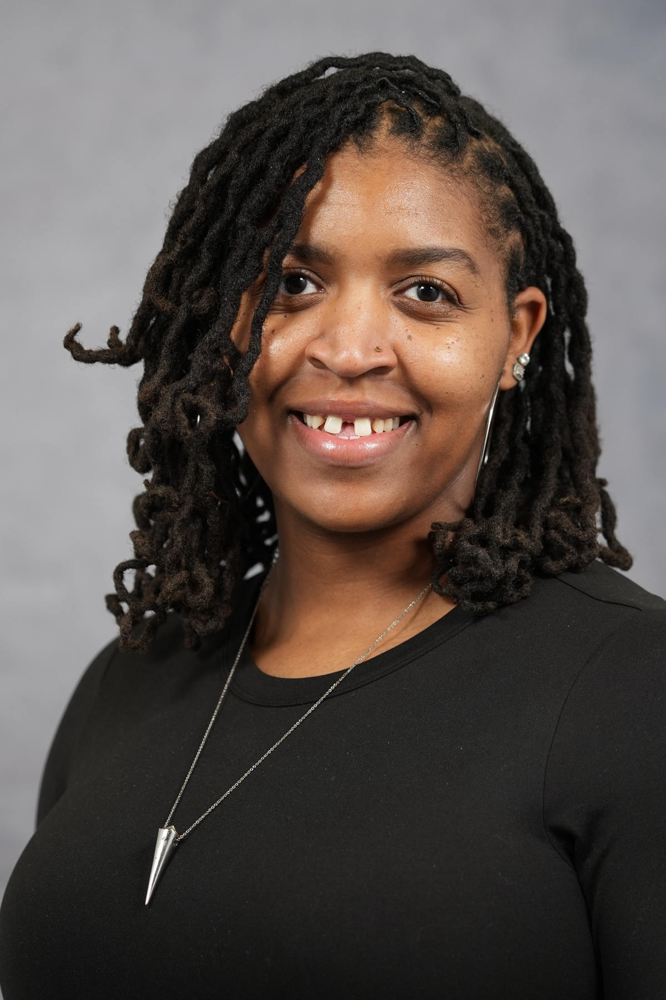
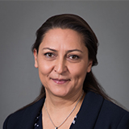
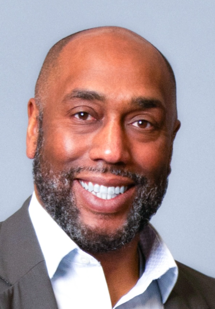

This is the Research in Graduate Mathematics Education Working Group Interest Form.
You can access our working group materials in this Google Drive folder.
We have extracted RGME related presentations and posters from this year's RUME conference, which you can see through this Google Sheet file.
Abstract
Inspired by the meaningful discussions and contributions from last year’s Ethics in Research in Graduate Mathematics Education (RGME) working group session, we envision this year’s session as a continued space and community for those interested in RGME. Despite the relevance of graduate education to mathematics and mathematics education, it remains under-researched compared to undergraduate mathematics education. Since the RGME working group’s inception in 2023, interest in this area has grown among both researchers and practitioners. However, there remain few formal research venues (or “homes”) for this work to develop in a sustained way. This working group aims to continue cultivating a supportive space for collaboration on research-driven approaches to improving postsecondary mathematics education.
Last year’s featured panel centered on ethical questions that should guide RGME and inform our research approaches. During that panel conversation, Dr. Aris Winger brought forth an emergent idea to discuss amongst the RGME community: drafting a Graduate Bill of Rights (GBR) as an aspirational artifact articulating what mathematics graduate students deserve, first as people, then as students, mathematicians, and professionals. This idea also holds potential to inspire and guide future research. Drawing on Donna Hicks’s (2011; 2018) concepts of dignity consciousness (how individuals want to be treated) and dignity in action (how we embody and uphold dignity in practice), we propose using the GBR as a touchstone for RGME inquiry, one flexible enough to support a range of research lenses and topics, yet focused enough to unify the group’s efforts. The GBR can serve as a dynamic, evolving framework connecting research, practice, and advocacy, highlighting areas where the field must grow while allowing research to iteratively shape the GBR as a living document.
We ground our efforts around key questions: How can we articulate graduate students’ rights in ways that affirm their inherent dignity, not only as future scholars but as people? How can drafting a GBR spark new research questions, inform institutional practices, and provide a foundation for advocacy? This year’s working group includes:
- a Q&A panel with graduate students and various members of the graduate education community and institutional partners (e.g., advisors, union representatives, department chairs),
- breakout sessions for sharing research and building connections,
- a presentation and discussion on current efforts to support graduate students and begin drafting the GBR, and
- collaboration time for focused discussion, mentoring, feedback, and continued development of the GBR and related research.
Agenda
The working group is from 8AM to 12 NOON Eastern Time, and this is the breakdown of our time:
- 8:00 - 8:20, Welcome, Introductions, Agenda, & Goals
- 8:20 - 9:00, Panel of RGME Researchers with Q&A
- 9:00 - 9:30, Roundtable Break-Out Groups and Discussions on Dignity
- 9:30 - 10:15, Break-Out Groups by Area of Interest
- 10:15 - 10:30, Break
- 10:30 - 11:00, Drafting the Graduate Bill of Rights
- 11:00 - 11:40, Collaboration, Mentoring, and Discussion Groups
- 11:40 - 12:00, Wrap-Up and Planning for Future Working Group Activities
Panel
After a brief introduction to the working group, we have a panel of three researchers from the RGME community with diverse research specialities and interests. Below you can read about each of them!
Tiana Johnson
Washington University in St. Louis
 Tiana Johnson is a candidate for the PhD in Mathematics at Washington University in St. Louis. Her research focuses on analyzing neural networks and implementing defensive mechanisms against adversarial examples with applications in tsunami prediction. Tiana currently serves as the president of the Black Graduate Student Association at WashU and uses her role to create and strengthen the community of Black graduate students on campus. Tiana is passionate about building the confidence of the next generation of mathematicians. She puts her passion into action by volunteering with the WashU Math Circle to help expand the math interests of students ranging from elementary to high school students.
Gulden Karakok
University of Northern Colorado
 Gulden Karakok is a Professor of Mathematics Education in the Department of Mathematical Sciences at the University of Northern Colorado and serves as the PhD in Mathematics Education program co-coordinator. Her research focuses on undergraduate students’ mathematical creativity, problem solving, and transfer of learning. She is a member of the Creativity Research Group (CRG) and contributes to work on creativity-fostering tasks and task-design frameworks, and student reflection instruments. She has co-facilitated and co-designed in-person and online professional development sessions on inquiry-based learning and the MAA’s Instructional Practices Guide, working with many instructors and graduate students. During her doctoral studies at Oregon State University, she co-founded a graduate student organization and secured funding to organize a regional conference that supported graduate students in discipline-based education research (DBER) in presenting their work and building professional networks. She is also the co-director of the Northern Colorado Math Circles program and enjoys facilitating Math Circles sessions for middle and secondary mathematics teachers and students.
Jasmin Rodriguez
University of Colorado Boulder
 Jasmin Rodriguez is a graduate student in Mathematics at the University of Colorado Boulder. Her research focuses on Random Matrices with a special focus on Wigner’s Semicircle Law. Outside of research, Jasmin is a passionate instructor and heavily involved in the mathematical community in her local region. In the classroom, she strives to have a welcoming and accessible environment to foster mathematical curiosity. Currently Jasmin is organizing the Math For All Conference in Boulder in hopes of creating the same nurturing atmosphere for fellow mathematicians of all stages.
Jasmin Rodriguez is a graduate student in Mathematics at the University of Colorado Boulder. Her research focuses on Random Matrices with a special focus on Wigner’s Semicircle Law. Outside of research, Jasmin is a passionate instructor and heavily involved in the mathematical community in her local region. In the classroom, she strives to have a welcoming and accessible environment to foster mathematical curiosity. Currently Jasmin is organizing the Math For All Conference in Boulder in hopes of creating the same nurturing atmosphere for fellow mathematicians of all stages.
Michael Young
Carnegie Mellon University
Michael Young is an Associate Professor of Mathematical Sciences at CMU, where he also serves as the associate dean for community in the Mellon College of Science. His primary research area is Discrete Mathematics, particularly problems in anti-Ramsey theory and zero forcing. Recently, he has had a focus on equity in the mathematics classroom. Most of this work has been through teacher professional development on creating inclusive mathematics learning spaces.